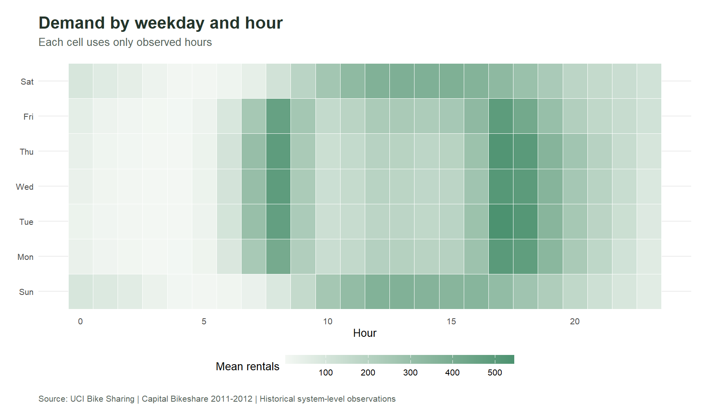
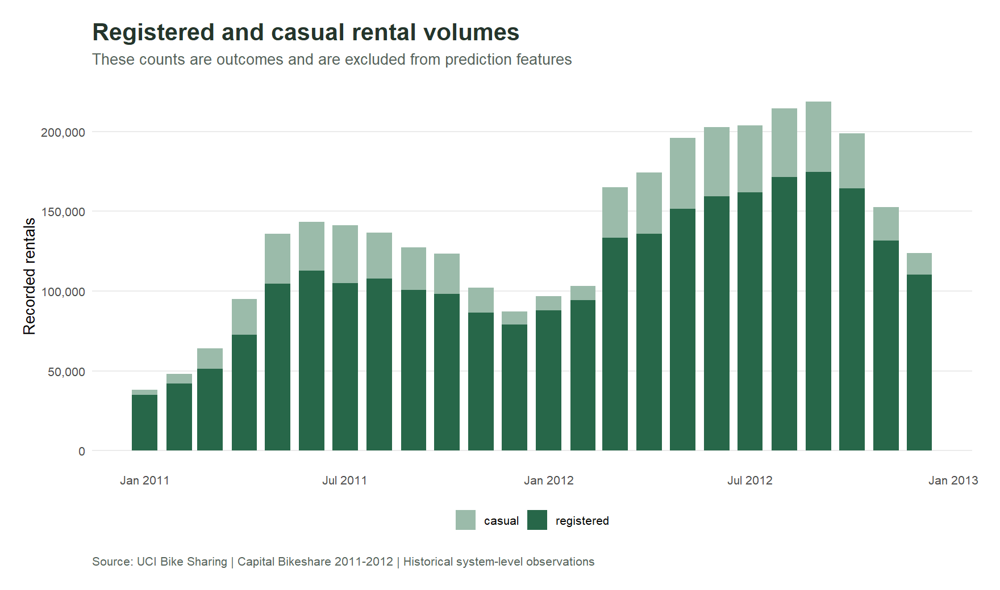
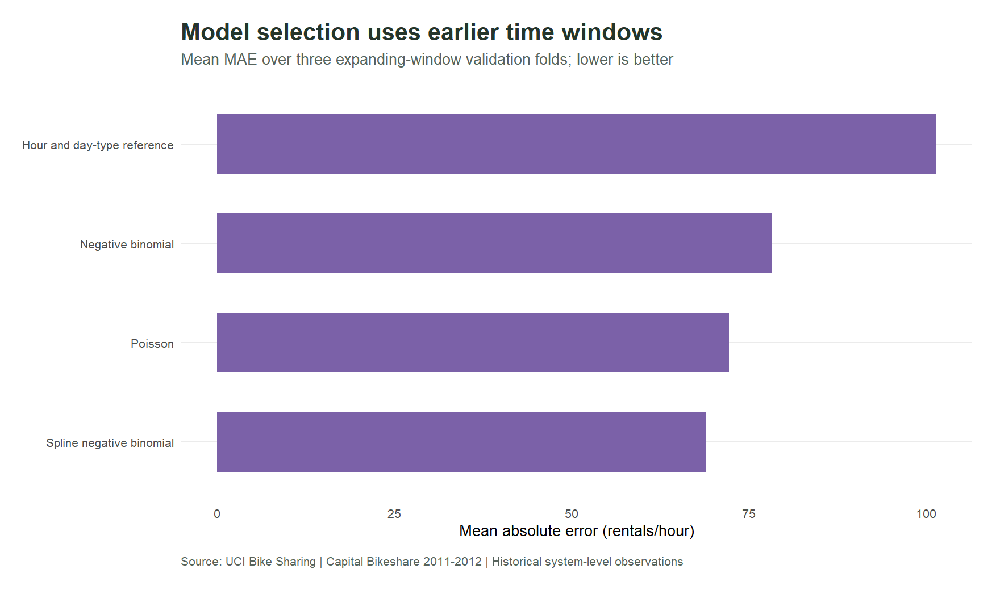
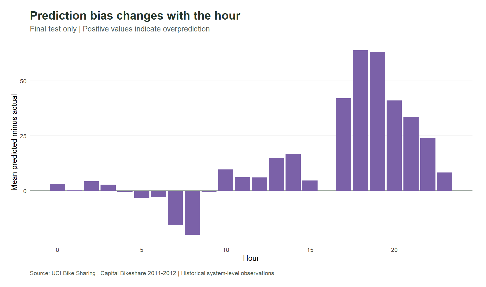

Plan around the shape of daily demand.
Explore 17,379 real hourly observations, understand working-day peaks and inspect an interpretable model evaluated on later data.
Patterns first. Evaluation next.
Evaluation uses observed weather. It measures estimation accuracy in this historical period, not verified advance forecasting or realised operational savings.
Demand explorer
Filter the actual source observations. Means use observed hours; missing records are not filled with zeros.
- Observed hours
- Recorded rentals
- Mean rentals / observed hour
- Registered rental share
Hourly profile for the selection
Green: mean recorded rentals per observed hour. The table below preserves sample sizes.
Recorded daily totals for the selection
These totals include only the observations selected above. Day-type filters omit excluded days rather than assigning them zero demand.
The calendar changes the demand profile.


Missing hours deserve explicit treatment.
The hourly source has 165 absent calendar-hour records on 76 days. Observed hourly totals still reconcile exactly with all 731 daily totals. The cause of absence is not established.
Model evaluation on later observations
Four candidates were compared on three expanding-window validation folds. The selected model was then fitted using dates before October 2012 and evaluated on the final quarter. The comparisons below use the same test observations.
Daily sums of hourly out-of-time estimates, conditional on observed weather. The month selector inspects saved test predictions and does not retrain the model.


Nominal intervals are not a calibration guarantee.
What the evidence can support
System workload planning
Separate working-day peaks from weekend demand. Combine rental profiles with staffing service times, operational targets and capacity before changing schedules.
Forecasting pilot
Use weather forecasts available at the planning horizon, document feature availability and compare models on later data under the same conditions.
Safety buffers
Calibrate intervals before deriving buffers. Quantify the cost of underprediction and overprediction rather than treating a nominal probability as sufficient.
Station rebalancing
Add station movements, inventory, stock-out duration, route costs and capacity. System-wide totals do not identify where bicycles should be placed.
Methods and downloads
How was information leakage avoided?
Training dates precede every validation or test date. The target components casual and registered are excluded. Spline transformations are fitted inside training windows. The final test does not select the model.
Is this a production forecast?
The model estimates later observed counts with contemporaneous observed weather. Advance forecasting requires weather forecasts available before the outcome and a new feature-availability evaluation. No station capacity or denied demand is observed.
What does the temperature curve mean?
It is a fitted conditional response for a documented reference calendar day, with humidity and wind fixed at training medians. It explains the statistical function and does not identify a causal effect.